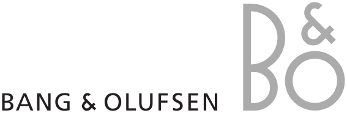
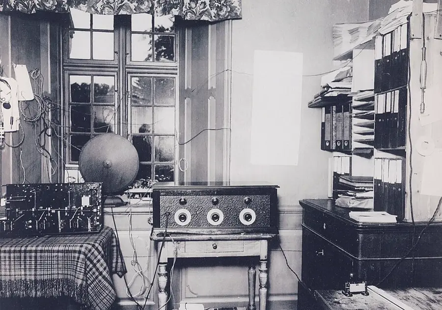
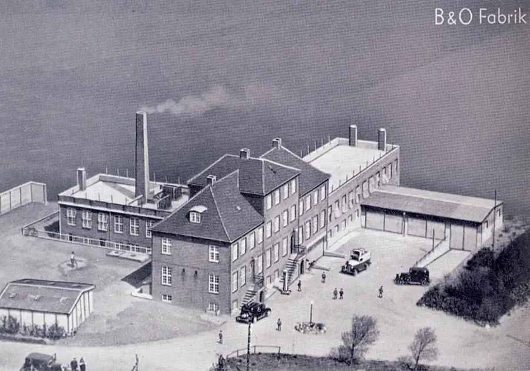

뱅앤올룹슨 Bang & Olufsen
뱅앤올룹슨은 오디오를 가전제품이 아니라 공간 속 오브제로 다루는 브랜드다. 소리의 품질뿐 아니라 제품이 놓이는 방식, 재료, 형태, 조작 경험까지 디자인의 일부로 통합한다.
최종 업데이트

뱅앤올룹슨은 어떤 브랜드인가
뱅앤올룹슨은 오디오를 가전제품이 아니라 공간 속 오브제로 다루는 브랜드다. 소리의 품질뿐 아니라 제품이 놓이는 방식, 재료, 형태, 조작 경험까지 디자인의 일부로 통합한다.
뱅앤올룹슨은 어떻게 봐야 할까
뱅앤올룹슨은 오디오를 가전제품이 아니라 공간 속 오브제로 다루는 브랜드다. 소리의 품질뿐 아니라 제품이 놓이는 방식, 재료, 형태, 조작 경험까지 디자인의 일부로 통합한다.
뱅앤올룹슨은 어떻게 시작되고 성장했나
뱅앤올룹슨은 덴마크 오디오 전문 브랜드로, 1925년 라디오에 관심이 많았던 엔지니어 피터 뱅과 스벤드 올룹슨이 설립했다. 최초로 배터리 없이 플러그만으로 소리를 낼 수 있는 엘리미네이터를 발명했으며, 이후 오디오와 영상 영역으로 사업을 확장해나갔다.
혁신적인 제품들을 출시하며 성장해온 뱅앤올룹슨은 오늘날 프리미엄 홈 엔터테인먼트 브랜드로 자리 잡았다.
뱅앤올룹슨의 브랜드 아이덴티티는 무엇인가
창립자인 피터 뱅과 스벤드 올룹슨의 성을 합쳐서 만든 뱅앤올룹슨은 단순한 전자 기기가 아닌 '삶의 동반자'를 지향하는 고객 중심의 브랜드 철학을 지니고 있다. 이를 바탕으로 내구성이 우수한 제품을 개발하고 있으며, 디자이너의 자율성을 중시하는 경영 철학을 바탕으로 독창적인 제품들을 선보이고 있다.
뱅앤올룹슨의 대표 제품과 서비스는 무엇인가
sound engineering, video technology
뱅앤올룹슨은 지금 어떤 상태인가
뱅앤올룹슨 연혁 — 주요 사건은 언제였나
뱅앤올룹슨 로고는 어떻게 변해왔나
대표 로고대표 브랜드 마크 대표 로고 1보관 이미지 1
대표 로고 1보관 이미지 1
BI/CI 아카이브보관 이미지 3사진으로 보는 뱅앤올룹슨의 역사


자주 묻는 질문
뱅앤올룹슨는 어느 나라 브랜드인가요?
뱅앤올룹슨는 덴마크의 기술·전자 브랜드입니다.
뱅앤올룹슨는 언제 설립되었나요?
뱅앤올룹슨는 1925년 설립되었습니다.
뱅앤올룹슨의 브랜드 아이덴티티는 무엇인가요?
창립자인 피터 뱅과 스벤드 올룹슨의 성을 합쳐서 만든 뱅앤올룹슨은 단순한 전자 기기가 아닌 '삶의 동반자'를 지향하는 고객 중심의 브랜드 철학을 지니고 있다.
뱅앤올룹슨의 대표 제품은 무엇인가요?
sound engineering, video technology
뱅앤올룹슨는 현재 어떤 상태인가요?
국가: 덴마크; 본사: Struer; 산업: 전자공학; 매출: 1853000000; 직원 수: 2046
뱅앤올룹슨의 창업자는 누구인가요?
뱅앤올룹슨의 창업자는 Peter Bang, Svend Olufsen입니다(위키데이터 기준).
뱅앤올룹슨의 본사는 어디에 있나요?
뱅앤올룹슨의 본사는 Struer에 있습니다(위키데이터 기준).
출처와 검증
뱅앤올룹슨 관련 참고: 공식 웹사이트 · 위키데이터 Q790020 · 한국어 위키백과 · 영어 위키백과. 브랜드명은 한글과 원어를 함께 표기하되 데이터에 없는 표기는 만들지 않습니다. 기원 국가·설립연도는 검수된 정의문에서 확인된 값을 우선하고, 없을 때만 공식 웹사이트 URL이 일치하는 위키데이터 개체의 값을 씁니다. 탄생일의 월·일은 위키데이터, 위키백과 정보상자, 본문 가운데 같은 연월로 확인되는 값만 싣고, 출처끼리 다르면 싣지 않습니다. 웹 첫 보관은 인터넷 아카이브가 공식 사이트 첫 화면을 처음 보관한 날로, 사이트 개설일과 다를 수 있습니다. 위키데이터 값은 2026-09-07 기준입니다.